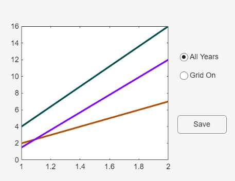
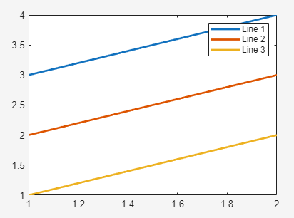
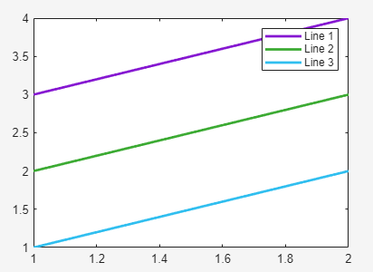
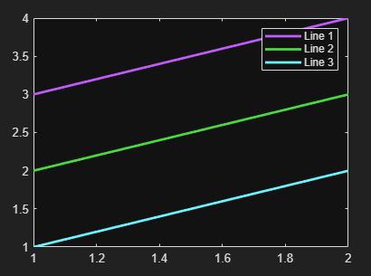
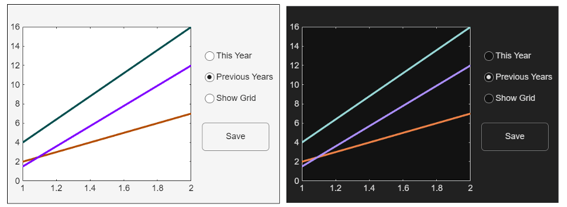

Design Graphics and Apps for Different Themes
By default, MATLAB® sets the colors of graphics objects and UI components in a figure according to the theme. If the theme changes, the color values of the objects in the figure update automatically to preserve the appearance and visibility of those objects. If you specify custom color values, MATLAB does not update those values if the theme changes. Color values set explicitly in one theme might not be as visible in another theme due to the change in the figure’s background color.
Use these strategies to customize the colors of plots and apps, and ensure consistent, readable results on systems configured for different themes.
Set the theme in your code — Use this approach when you have one design that you want to look the same on all systems, regardless of how their themes are configured.
Select plot colors from a default palette — Use this approach to let MATLAB update the color values automatically for different themes. You can select or rearrange the default colors of objects in the figure.
Specify custom colors for different themes — Use this approach to assign and manage custom color values for different themes.
Set Theme in Your Code
To specify the theme of a figure regardless of the system running your code, call the
theme function or set the Theme property of the
figure. When you set a specific theme, the figure and its contents are not affected by the
theme of the operating system, the MATLAB desktop, or the theme of other figures in the MATLAB session.
For example, this code creates a light-themed app containing a plot, two radio buttons, and a push button. If this app runs on a system configured for a dark theme, the app still looks the same as it is here. (This app is for illustration purposes. None of the components are functional.)
function lightThemeApp % Set the theme to "light" uif = uifigure(Theme="light"); % Create a plot and set the line colors uiax = uiaxes(uif,Position=[20 20 325 375]); y = [2 1.5 4; 7 12 16]; p = plot(uiax,y,LineWidth=2); p(1).Color = [0.7 0.3 0]; p(2).Color = [0.5 0 1]; p(3).Color = [0 0.3 0.3]; box(uiax,"on") % Create the UI components uib = uibuttongroup(uif,Position=[380 90 150 150],BorderType="none"); uiradiobutton(uib,Position=[10 100 120 30],Value=1,Text="All Years"); uiradiobutton(uib,Position=[10 70 120 30],Value=0,Text="Grid On"); uibutton(uif,Position=[385 80 80 30],Text="Save") end

Select Plot Colors from a Default Palette
MATLAB has two default color palettes for plots—one for the light theme (named
"gem") and one for the dark theme (named "glow"). By
default, one of these palettes is stored in the ColorOrder property of the
axes as a matrix of RGB triplets. When you add graphics objects to the axes—for example, if
you plot multiple lines—MATLAB assigns the palette colors to the lines in the order that the lines are
created by default. The first line uses the first color, the second line uses the second
color, and so on.
If the theme of the figure changes, MATLAB adapts the plot to the new theme by replacing the palette in the
ColorOrder property to the default palette for the new theme. This
adaptive behavior is supported by the "gem" and "glow"
palettes only.
| Theme | ColorOrder Colors |
|---|---|
Light theme ( |
|
Dark theme ( |
|
When the theme changes, the mapping of colors to the objects in the axes follows the
same order as in the previous theme. The order information is stored in the SeriesIndex property of each object in the axes. For example, by default in
line plots, the first line has a SeriesIndex value of
1, and it uses the first color of the palette. The second line has a
SeriesIndex value of 2, and it uses the second
color, and so on. So, the color of a line depends on both the color palette stored in the
axes and the SeriesIndex value of the Line object.
You can change how the colors are ordered in a plot by changing the
SeriesIndex values of the lines. For example, setting the
SeriesIndex property of a line to 3 displays that
line using the third color of the palette. You can also use the same color for multiple
lines by setting the SeriesIndex property of each line to the same
value. This relationship of the SeriesIndex property to the colors of
the color palette enable you to achieve a certain level of customization and take advantage
of the theme-adaptive behavior of MATLAB.
Note
The mapping of colors to objects in the axes also depends on the values of the
LineStyleCyclingMethod and LineStyleOrder
properties of the axes. This topic describes the behavior when these properties have their
default values. For more information about the LineStyleCyclingMethod
and LineStyleOrder properties, see Control Automatic Selection of Colors and Line Styles in Plots.
For example, this code plots three lines in a light-themed figure. The first line has a
SeriesIndex value of 1, the second line has a
SeriesIndex value of 2, and the third line has a
SeriesIndex value of 3. These lines use the first,
second, and third color from the default "gem" palette, respectively.
figure(Theme="light") p1 = plot([3 4],LineWidth=2); hold on p2 = plot([2 3],LineWidth=2); p3 = plot([1 2],LineWidth=2); legend("Line 1","Line 2","Line 3") hold off

Change the SeriesIndex values to 4,
5, and 6. As a result, the lines use the fourth,
fifth, and sixth colors from the palette.
p1.SeriesIndex = 4; p2.SeriesIndex = 5; p3.SeriesIndex = 6;

Change the theme to "dark". The line colors update to the fourth,
fifth, and sixth colors from the "glow" palette, which is the default
palette for the dark theme.

In addition to the default color palettes, the theme-adaptive behavior depends on
certain mode properties of the objects in the axes. You can access the mode properties for
many (but not all) objects. Mode properties are paired with specific properties of an
object, and their names end with the word "Mode". For example,
Line objects have a Color property and a ColorMode property. If the ColorMode property has a value
of "auto" (the default value), the theme-adaptive behavior is enabled. If
the mode property is "manual", the theme-adaptive behavior is disabled.
There are three ways that the mode property can be set to
"manual":
You set the mode property to
"manual"explicitly.You set the corresponding color property to a value, such as an RGB triplet, hexadecimal color code, or color name like
"red". MATLAB then sets the mode property to"manual".You indirectly set the corresponding color property by specifying a color-related argument when you call a plotting function. For example,
plot([1 2 3],"-red")plots a red line and sets theColorModeproperty to"manual".
Specify Custom Colors for Different Themes
To create an app with customized colors that update for different themes, write a
ThemeChangedFcn callback for the figure. In the callback, query the
Theme property of the figure and then write a conditional statement
based on that theme. Specify a set of custom colors for each theme. A quick way to convert
the colors from your initial design to another theme is to pass them to the fliplightness
function. The fliplightness function determines how light or dark your
colors are and flips them to the opposite side of the lightness-darkness scale. If you pass
a dark color to the function, it returns a light version of that color with approximately
the same hue. Similarly, if you pass a light color to the function, it returns a dark
version of that color.
For example, this code creates an app containing a plot, three radio buttons, and a push
button. The ThemeChangedFcn callback is a local function named
checktheme. The checktheme function defines a
matrix of light-theme colors and a matrix of dark-theme colors. The dark-theme colors are
calculated using the fliplightness function, given the light-theme
colors. After defining the color matrices, the checktheme function gets
the current theme by querying the value src.Theme.BaseColorStyle (where
src is the figure that triggers the callback). Then, a
switch statement updates the ColorOrder property
of the axes depending on the theme.
function uif = themeFlexibleApp % Create the figure and a plot uif = uifigure; uiax = uiaxes(uif,Position=[20 20 325 375]); uif.ThemeChangedFcn = @(src,eventData)checktheme(src,eventData,uiax); y = [2 1.5 4; 7 12 16]; plot(uiax,y,LineWidth=2) box(uiax,"on") % Create UI components uib = uibuttongroup(uif,Position=[380 100 150 150],BorderType="none"); uiradiobutton(uib,Position=[10 100 120 30],Value=1,Text="This Year"); uiradiobutton(uib,Position=[10 70 120 30],Value=1,Text="Previous Years"); uiradiobutton(uib,Position=[10 40 120 30],Value=0,Text="Show Grid"); uibutton(uif,Position=[385 80 95 40],Text="Save") % Call checktheme to establish the theme and assign custom colors checktheme(uif,[],uiax) function checktheme(src,~,uiax) lightthemecolors = [0.7 0.3 0; 0.5 0 1; 0 0.3 0.3]; darkthemecolors = fliplightness(lightthemecolors); thm = src.Theme.BaseColorStyle; switch thm case "light" uiax.ColorOrder = lightthemecolors; case "dark" uiax.ColorOrder = darkthemecolors; end end end
If you change the theme of the app, the checktheme function
executes and updates the color values. This image shows the appearance of the app in both
light and dark themes.
